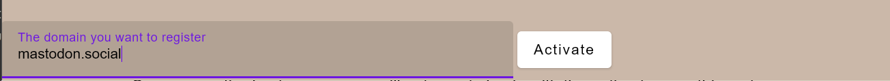
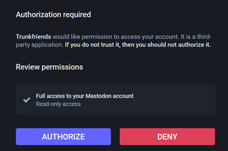
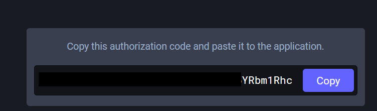
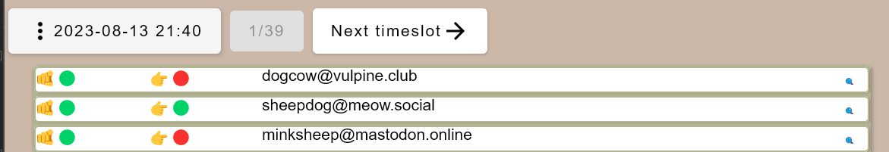
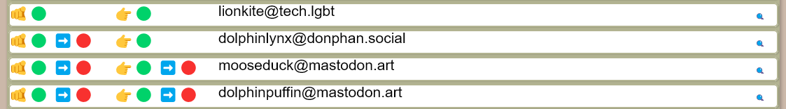
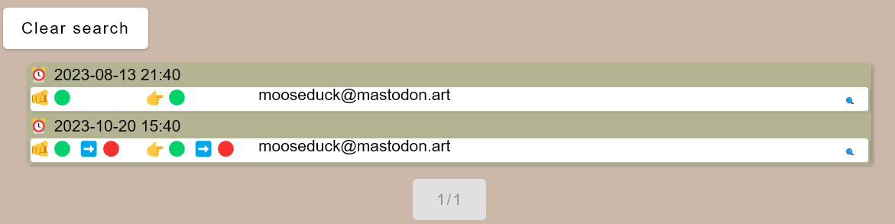

|
|
|
Using Trunkfriends.
|
This document covers v0.3, and is not up-to-date with the newest features. It should,
however, be plenty to get you started
First use
Once you start the app for the first time, it will be quite empty. You will see the
about page, and have the possibility to click "Select Server" and then "Add Server".
This is the first thing you must do.
Once you click "Add server" you should see something like this:

Here, we have filled in the value "mastodon.social" as the server we want to use.
This is where you enter the name of the server you are using. For instance, If your
username is "@myuser@tech.lgbt", then tech.lgbt is your server, and you enter that
here.
Once that is done, press "Activate"

After you have pressed the "Activate button" a field with a URL will appear
and a "Copy URL" button. Press this button. The URL then be copied to the
clipboard. Do NOT try to select and copy the URL manually, this currently does
not work.
Go to a browser, preferably one that is logged in at the sever you want
to collect followers / following lists from, and paste the URL. If you are
not logged in, your server will ask you to do so.

Mastodon will ask you to authorize Trunkfriends to give it access to your mastodon account.
This is the same as you need to do if you use a client like Megalodon or similar on
your phone to access mastodon. It is a way for the application to get a key it can use
to access your mastodon data, without you exposing your password to the application.
You can at any time revoke access.
Once you press "Authorize", you will see a screen
like this.

This is a code that Trunkfriends will use to obtain the key from the mastodon
server. Press the "Copy" to copy this key to your clipboard, go back to
Trunkfriends and press the "Paste" button. Again, use the button, don't try to
paste manually, the UI does not support this.
Now, press "finish registration", and your will have added your first server
to Trunkfriends. If you have multiple mastodon accounts, you can add more servers,
Trunkfriends can keep track of them all.
The first import of followers / following lists
Press "Refresh followers" and then "start importing following / followers list".
After the import is done, you will be taken to the history overview that will
have entries looking something like this:

**23-08-13 21:40** is the time the import of these lines happened. Your UI will not have
"next timeslot"
button, as you have only run the import once.
The finger pointing at you means "following you" and the finger pointing to the right mean
"you follow". The green dot indicates yes and the red indicates no. So in the list over,
we can see that sheepdog@meow.social is following you, and you are following them.
Dogcow and minksheep howevever, are following you, but you do not follow them.
Since this is the first time you imported the lists, Trunkfriends cannot detect any changes,
it can simply display the current status of those you follow and those that follow you.
There
will never be a line with two red dots, as they will only show up in the list if you
have a relation to them.
You now probably want to wait a lill before you import the following / followers lists
again, how long depends on how frequent your friends list change and how eager you are
to check what has happened.
## The second import of followers / following lists
Now, the second time you import, things can get a bit more interesting

Now, a few things has happened. You will see a blue arrow on some lines, this means your
connection to this user has changed. Green to red means the connection is lost.
You gained a new follower / following relation with
lionkite, but sadly, dolphinlynx is not following you anymore, though, but you
still follow them. mooseduck & dolphinpuffing on mastodon.art, however, you
have compltely lost connection with. Maybe you have lost connection with them
due to defederation? Trunkfriends cannot tell you why, maybe you unfollowed them,
and they unfollowed you, maybe you blocked them. But if this is unexpected,
you can check why.
You can navigate between the different timeslots when the imports happened by
pressing previous or next timeslot buttons, or you can quickly get to a given
timeslot by pressing the dropdown menu that shows the current timeslot, and
choose a new timeslot.
Zooming in on mooseduck
When you view timeslots, you see what happened to your connection to a given user
at a given time. You may want to know more about what happened to your connections
to a given user at other times. For this, you use the lill spyglass at the end
of the line. Let us click on the one on mooseducks line. This happens:

This spyglass will effectively "zoom" you in on that user, and display all the
recorded lines you have with them.
With mooseduck, we can see that they were discovered as a connection when we ran
import 8/13-2023, but connection was lost the 20/10-20203.
Press "Clear search" to zoom out and back to the timeslot.
I imported my followers again, but I didn't get a new timeslot for the import?
If there were no changes between last time you ran the import and this, no changes
are recorded, and no new timeslot was needed.
Nothing happens when I refresh? What is wrong?
If you change your password in mastodon, or revoke the access Trunkfriends had
to your account, nothing will happen. We will soon implement more proper error
messages, but the alpha release does not have them.
What you need to do is to select "Add new server" and add the one that you no
longer have connection to. Don't worry, this will NOT overwrite any of your data
for that server, your lists will be intact. Once you have gone through adding
the "not new server" as a new server, it will have gotten a new access key (aka
bearer token), and it should work again.
That's it.
Trunkfriends will get more functionality to make it more useful, but for how, this
covers the main usage.
For future, we plan to give the option to view followers "as is", and help
add followers to lists, do batch import of followers (handy after moving
servers and reconnecting with lost friends), etc.
|
|